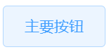
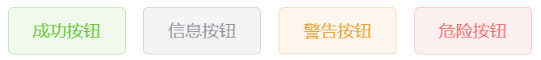

入职了新公司，是一家制造业的IT部门，部门比较小，没有专业的视觉或交互设计师，领导给了我一个从未担任过的任务：制定UI规范。
UI规范还在制定中，其中遇到一个关于组件颜色的设计，以前一直在用，却没注意到的，觉得值得记录。
在计算机中表示颜色有许多种方式。前端工程师最常用的就是十六进制表示的RGB了，也就是类似#5599CC形式的值。但RGB是为了符合显示器的三原色而设置的，并不适合人来理解。比如现在说想要一个淡橙色，一下子很难想出来应该写一个怎样的值。而HSL则更有助于人类理解。
RGB的值是由两位红色+两位绿色+两位蓝色组成，而HSL的值由色相（Hue）、饱和度（Saturation）、亮度（Light）组成，其中色相决定是红色，绿色，蓝色，黄色还是紫色，青色等。饱和度决定颜色的鲜艳程度，饱和度越高越鲜艳，越低越接近灰色。亮度决定颜色的明亮程度，值越大越接近白色，越小越接近黑色。
盗用网上一张图：

下面是一个颜色选择器，可以体验HSL各个值所带来的变化：
其中，饱和度和亮度可以很明确地表示人所感觉的颜色，色相需要做一定记忆。
这和组件颜色有什么关系呢？
以Element UI的Button为例，看一下各种类型的Button的颜色
primary:
样式代码：
.el-button--primary.is-plain {
color: #409eff;
background: #ecf5ff;
border-color: #b3d8ff;
}
这里是一个plain的button的字体颜色，背景色，和边框颜色，其Hex和HSL的对应关系：
| 颜色 | Hex | HSL |
|---|---|---|
| #409eff | hsl(210.5,100%,62.5%) |
可以看到，色相是相近的，相差1.1，区别最大的在于亮度
再看一下其他类型button的样式：

.el-button--success.is-plain {
color: #67c23a;
background: #f0f9eb;
border-color: #c2e7b0;
}
.el-button--info.is-plain {
color: #909399;
background: #f4f4f5;
border-color: #d3d4d6;
}
.el-button--warning.is-plain {
color: #e6a23c;
background: #fdf6ec;
border-color: #f5dab1;
}
.el-button--danger.is-plain {
color: #f56c6c;
background: #fef0f0;
border-color: #fbc4c4;
}
对应的颜色：
| 类型 | 颜色 | Hex | HSL | 色相 |
|---|---|---|---|---|
| Success | #67c23a | hsl(100.1,54%,49.4%) | 100左右 | |
| #f0f9eb | hsl(98.6,53.8%,94.9%) | |||
| #c2e7b0 | hsl(100.4,53.4%,79.8%) | |||
| Info | #909399 | hsl(220,4.2%,58.2%) | 230左右 | |
| #f4f4f5 | hsl(240,4.8%,95.9%) | |||
| #d3d4d6 | hsl(220,3.5%,83.3%) | |||
| Warning | #e6a23c | hsl(36,77.3%,56.9%) | 36左右 | |
| #fdf6ec | hsl(35.3,81%,95.9%) | |||
| #f5dab1 | hsl(36.2,77.3%,82.7%) | |||
| Danger | #f56c6c | hsl(0,87.3%,69.2%) | 0 | |
| #fef0f0 | hsl(0,87.5%,96.9%) | |||
| #fbc4c4 | hsl(0,87.3%,87.6%) |
可以看到，差异主要在于亮度，部分颜色会有色相和饱和度的微调
由此，如果想要动态地自定义组件颜色，可以利用这个规律来实现
例如，如果想要自定义element ui button的组件颜色，可以用js计算颜色值，然后通过css变量覆盖样式：
// template:
<el-button style="styleStr" type="primary"></el-button>
// script:
this.styleStr = `--color: hsl(${this.hue} ${this.saturation}% ${this.light}%);
--background: hsl(${this.hue} ${this.saturation}% ${this.light + 50}%);
--border-color: hsl(${this.hue} ${this.saturation}% ${this.light + 30}%);
`
// style:
.el-button--primary.is-plain {
color: var(--color);
background: var(--background);
border-color: var(--border-color);
}
如果只需要支持较新的浏览器，那么可以使用更方便的 Relative Color：
this.styleStr = `--color: ${this.color}; --background: hsl(from var(--color) h s calc(l + 50)); --border-color: hsl(from var(--color) h s calc(l + 30));`
省去了使用js计算色值的过程，而使用css来计算
2024.4.24